1.1 Тема: УСПАДКУВАННЯ. АБСТАКТНІ КЛАСИ. ІНТЕРФЕЙСИ
1.2 Мета: придбати практичні навички роботи створення базоаового та похідних класів, перевизначення методів у класі, методів перевантаження унарних, бінарних, логічних операторів, операторів порівняння.
1.3 Постановка задачі:
1. Доповнити програмну реалізацію класів методами успадкування, абстрактними класами та інтерфейсами.
2. Протестувати програму.

Середовище розробки: Visual Studio
Частина 1 - з абстрактним класом та віртуальним методом

Частина 2 - з інтерфейсами

4.1 - 4.2 Базовий абстрактний та похідний класи - приклад 1
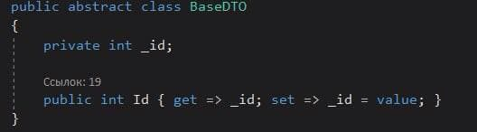 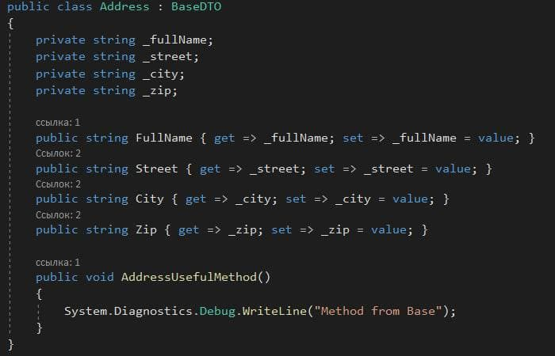4.1 - 4.2 Базовий з віртуальним методом та похідний класи - приклад 2
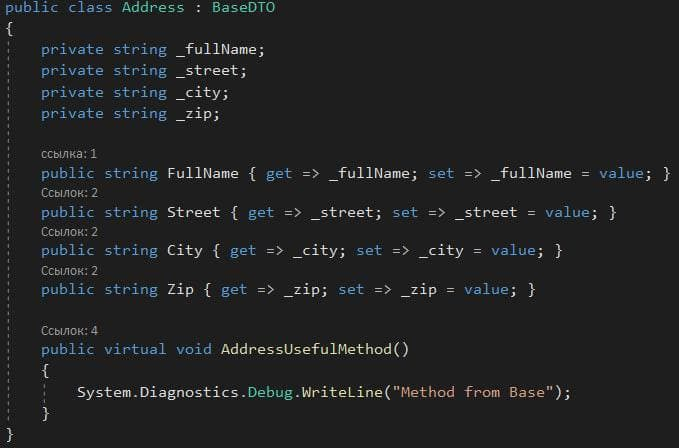 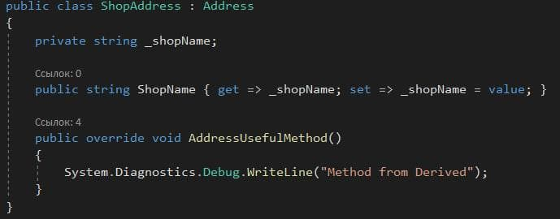4.3 UpCast та DownCast перетворення при заміщенні методу + результат виконання
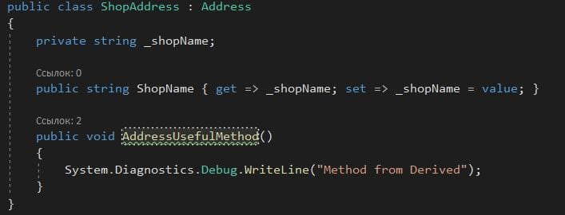 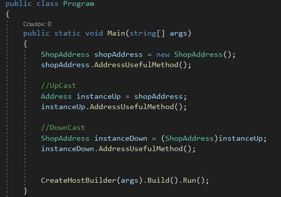 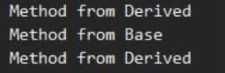4.3 UpCast та DownCast перетворення при перевизначенні віртуального методу + результат виконання
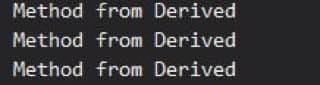4.4 Інтерфейси
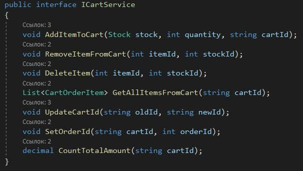 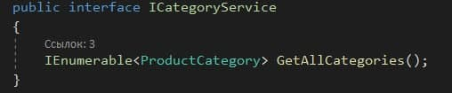 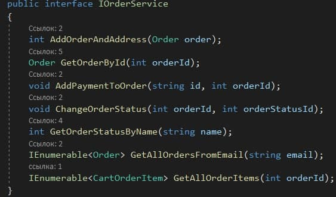 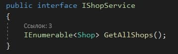 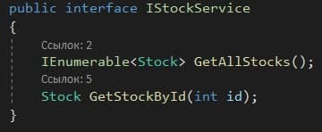4.5 Файлова структура
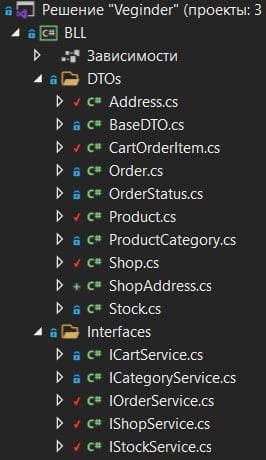Проект розміщенно на GitHub
Посилання
Висновки
У ході виконанная даної лабораторної роботи навчились створення базового та похідних класів, перевизначення методів у класі, методів перевантаження унарних, бінарних, логічних операторів, операторів порівняння.
Доповнили програмну реалізацію класів методами успадкування, абстрактними класами та інтерфейсами.